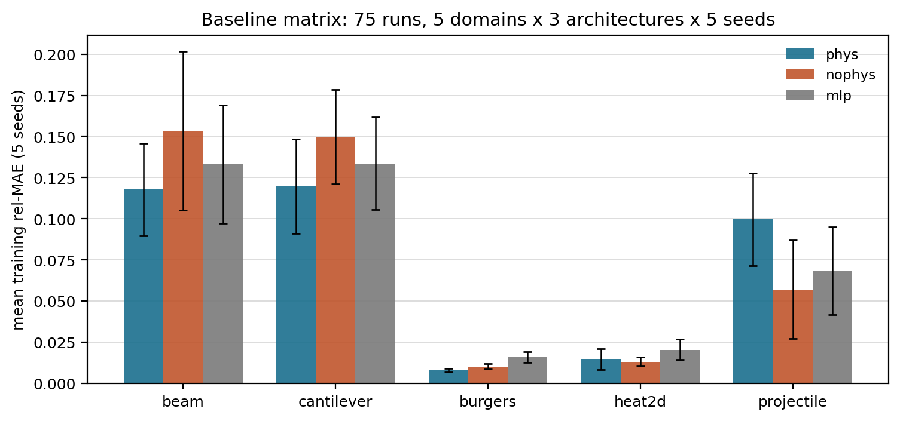

A verifiable 12-domain benchmark for physics ML: targets generated separately from the training signal, predictions scored against governing-equation residuals written from scratch.
[Code] [Paper] [Supplementary]
('Most physics-ML benchmarks validate models against the same code that generated the data, so agreement can just mean shared bugs. PhysBench enforces two independence conditions: every target comes from a closed-form or high-resolution numerical solution implemented separately from the training signal, and every prediction is scored against an independent governing-equation residual — finite differences, Euler/RK4, energy balance — not against the generating code. Twelve domains, a committed 75-run baseline matrix, an operator-network comparison on the ten trajectory domains, and per-domain difficulty analysis showing that the best architecture differs by domain.',)
("Two independence conditions, both structural. Targets are generated separately from the training signal, and predictions are scored against the governing equation rather than the generating code. That is what makes a benchmark claim survive contact with a reviewer: 'right' is defined by something the benchmark author did not also write.",)
('Held-out error spans two orders of magnitude across domains, and the best architecture differs by domain — there is no universal winner, which is the point. The comparison is per-domain and per-capacity: the generalist wins outright on spring and LC while ten dedicated DeepONets win on per-law fidelity elsewhere.',)

The 75-run baseline matrix: mean training rel-MAE, five seeds.
Seven manuscripts, one codebase, one guarantee: every number traces to a committed JSON and regenerates from a committed script.
git clone https://github.com/sehajr-singhs/physbench cd physbench python -m unittest tests.test_physx # 49 physics tests python figs/make_figures.py # figures from committed data python src/physx/run_matrix.py # re-run the 75-run matrix (< 1 h, CPU) python src/physx/baselines.py --per-law-only # DeepONet baselines
Simulation-only, CPU-scale, deterministic seeds. No GPU required.